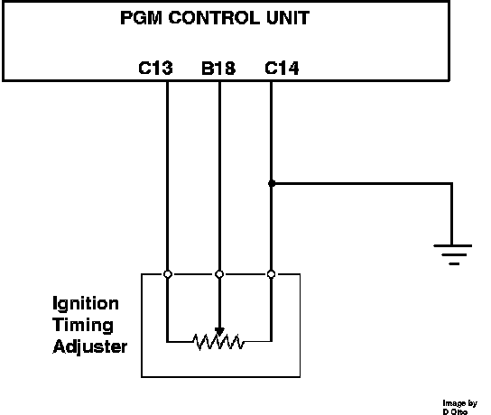

Ignition Timing Connector: Description and Operation
Ignition Timing Adjuster:

The ignition timing adjuster is mounted inside the vacuum control box at the firewall. The unit consists of a variable resistor (potentiometer). It has a fixed 5 volts applied from ECU terminal C13 and a ground on terminal C14. When the adjustment screw is turned a varied voltage is returned to the ECU on terminal B18. The ECU uses the signal to modify the ignition base timing setting. This adjuster is required because the distributor mounting is fixed and does not allow for adjustment.